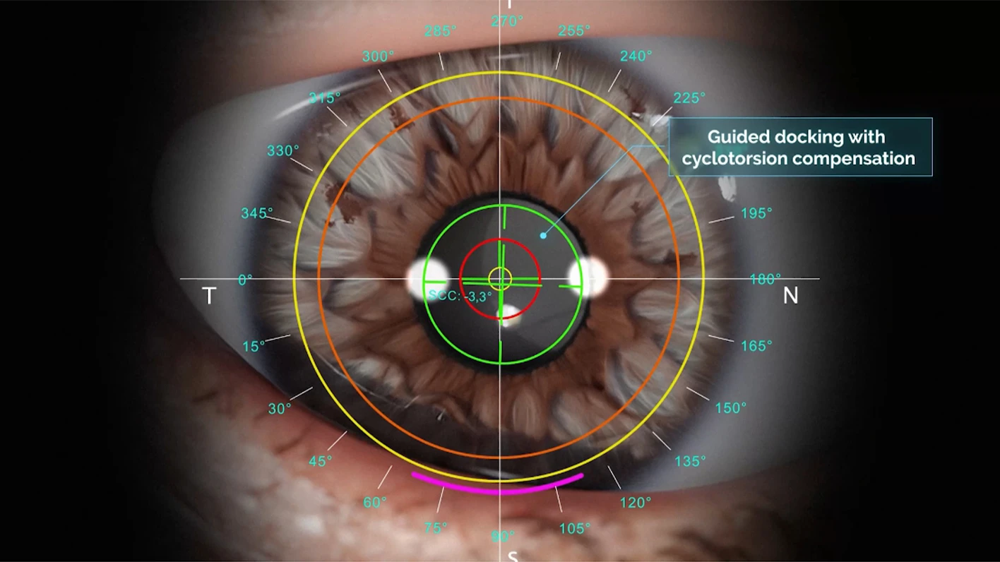
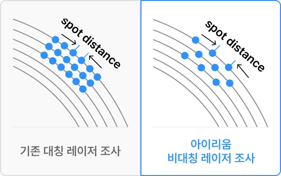

아토스 노바 CenTrax®
정밀 시력교정 시스템
CenTrax®는 ATOS에 탑재된 자동 중심정렬 시스템입니다. 검사 장비와 연동되어 안구의 미세한 중심 이탈 및 회전 오차를 자동으로 보정합니다. 고도 난시 교정, 동공 중심 이격이 큰 경우 또는 동공이 큰 경우에서 기존 triple centration 에 더해 좀 더 정밀한 수술 설계가 가능하도록 합니다.
왼쪽으로 스와이프
<-
-
CenTrax®정확한 시축 중심 정렬 안구 회전까지 자동 보정수술 중 눈의 회전과 정렬 오차를 자동으로 보정해 수술의 정확도를 높입니다.
-
Low Dose, Asymmetric Spacing낮은 에너지 및 비대칭 레이저 배열로 정밀한 수술 구현기존 아이리움이 제시한 기준을 모두 만족하는 정교한 수술을 구현합니다.
-
Diagnostic Import진단 장비 데이터 연동MS-39, PERAMIS 등 정밀 진단 데이터를 활용해 더욱 정확한 시력교정을 지원합니다.
-
CenTrax® - 자동 중심 정렬과 능동 안구 추적 시스템
CenTrax®는 SCHWIND ATOS에 탑재된자동 중심 정렬 및 능동안구 추적 시스템입니다. 진단 장비와연동되어 동공의움직임과시축을 인식하고, 안구회선 움직임과 도킹 후 잔여 오차를 자동 보정합니다.
고도 난시 교정, 동공 중심 이격이 큰 경우 또는 동공이 큰 경우에서 기존 triple centration 에 더해 좀 더 정밀한 수술 설계가 가능하도록 합니다.-
자동 중심 정렬
진단 장비 데이터를 연동해 수술 중 정확한 중심 정렬을 유지합니다. -
자동 안구회선 보정
수술 중 발생할 수 있는 안구회전을 자동 보정하여, 난시 교정의 정밀도를 높입니다. -
미세 오차 자동 보정
수술 중 남아 있는 미세한 중심이탈까지 자동으로 보정해 수술의 정확도를 높입니다.

-
-
낮은 에너지와 비대칭 레이저 배열
아이리움이 제시한 스마일 수술의 새로운 기준들은 노바에서 역시 그대로 적용됩니다. 낮은 에너지와 비대칭 레이저 배열이 기본으로 적용되어 수술 후 고위수차를 줄이고 좀 더 선명한 시력을 설계합니다.

-
0.05D 단위까지 반영하는 미세 맞춤 설계
기존 0.25 단위에서 0.05D 단위의 세밀한 교정이 가능해 미세한 시력 불균형과 잔여 난시를 더 정밀하게 반영할 수 있습니다. 아이리움은 정밀검사와 CenTrax® 보정 기술을 바탕으로 개인별 눈에 맞는 고정밀 시력교정을 설계합니다.